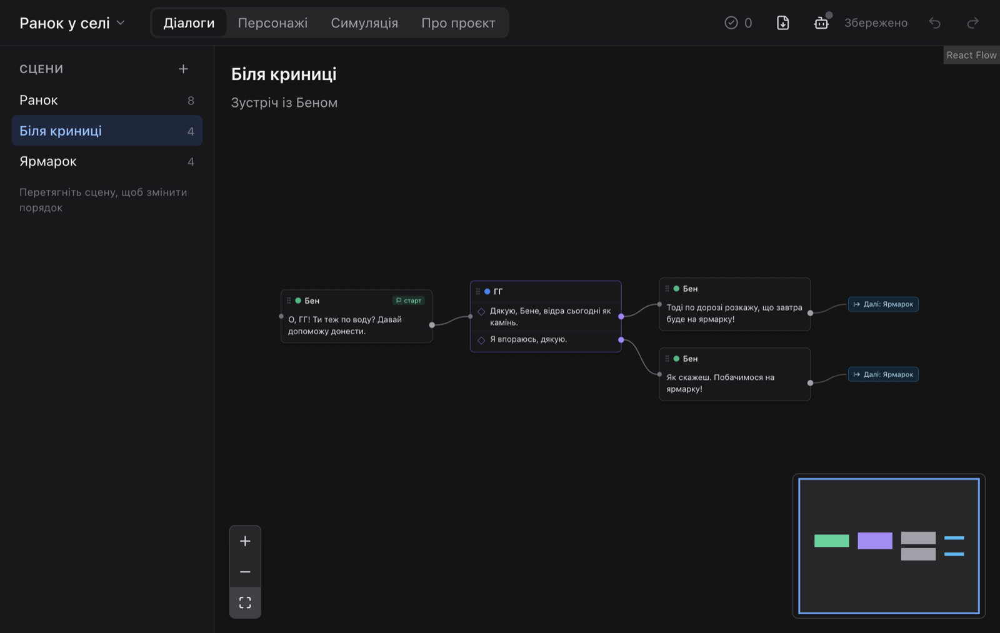

01
Діалог як мапа, а не документ
Кожен блок — репліки одного персонажа. Кілька реплік у блоці — це вибір, і кожен варіант має власну стрілку. Гілки сходяться знову, повертаються назад або ведуть в іншу сцену. Усе незавершене підсвічено червоним.
- (+) після блоку — і пишете далі
- Скасування й повтор для кожної дії
- Автозбереження щосекунди
